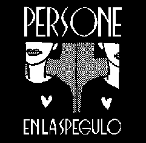

En la spegulo
La albumo En la spegulo estas la dua albumo de Persone.
Ĝi estis eldonita kiel kasedo en 1991.
Tiam Persone jam konsistis el la nunaj tri membroj: Martin, Anders kaj Bertilo.
Havebla kiel torento! Persone mem reeldonis En la spegulo kiel k-diskon, kun multe pli bona sono ol la origina kasedo. La k-disko estas elĉerpita, sed ĝi estas elŝutebla senkoste kiel torento (per programo kiel BitTorrent k.s.). La torento enhavas la tutan albumon kiel wav-dosierojn (= plena k-diska kvalito). Rimarku, ke tio ankoraŭ estas iom eksperimenta. Estu do pacienca.
Flanko A
- Kio ajn (Martin, Bertilo)
- Amanda (Martin, Bertilo)
- En la spegulo (Martin)
- Ĉu neniam plu (Martin)
- Mi ne scias (Martin)

Flanko B
- Folioj en la vent’ (Martin)
- Alia mondo (Martin)
- Neĝo dancas (Martin)
- Du homoj (Martin)